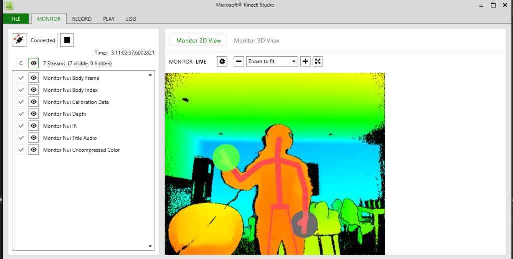

I have worked on Skeleton Based Action Recognition using Kinect V2 to determine the difference between large bechmark datasets such as PKU-MMD and SBU-Kinect dataset. First I have collected data using Kinect V2 using Matlab and then used a Convolutional Neural Network (CNN) model for prediction. In this post, I will walk you with all the steps I followed and methods I used for this piece of work.
I assume that you can connect Kinect device to power source and can connect to PC using USB cable. Now, you need to download Microsoft Kinect SDK 2.0 and install it.
When you successfully install Kinect SDK then you open find it with name "Kinect Studio v2.0" in your search bar and when you open it then it very left corner there will be icon which will display "connect to server" if you hover, you click it and you can see the ouput of Kinect cameras at right hand side.
 [Source]There are number of steps I followed to get data from Kinect in Matlab.
i) First is installation of "Image Acquisition Toolbox" which you can easily install using Matlab Add-Ons option in Home tab. You can easily install as trial version if you don't want subscription.
ii) Now you need to install "Image Acquisition Toolbox Support Package for Kinect for Windows Sensor" which can be also be installed using Add-Ons in Matlab.
iii) Now when you run "imaqhwinfo" command in Matlab command prompt, if everthing is installed properly then it will display Kinect as Installed Adaptors. When you get this then you are all set for getting data from Kinect in Matlab.
There is good source Skeleton Viewer for Kinect V2 Skeletal Data to follow inorder to see what data sort of data you can get by Kinect and how it is stored and you can draw skeleton on top of RGB image.
Continue